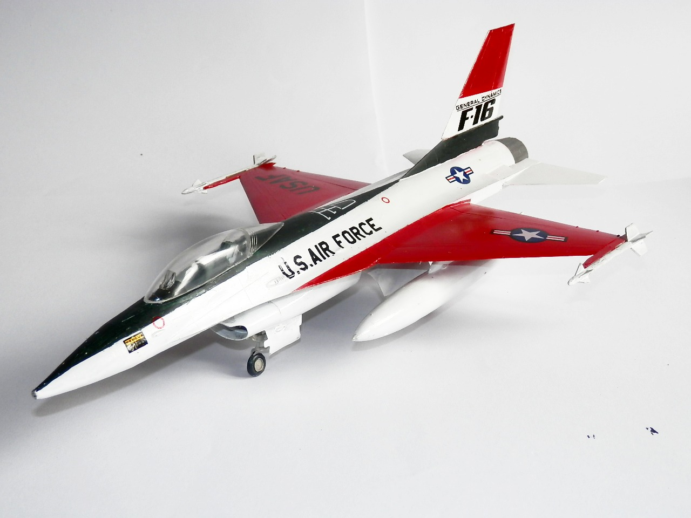
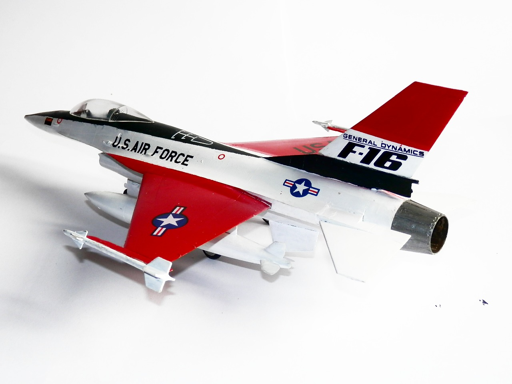

Aerei · scale model archive
General Dynamics F16
General Dynamics F16 — Kit: Hobbycraft, Scale: 1/48. Striking first prototype livery, the official 90-minute maiden flight was made at the Air Force…

Photo gallery

English description
Striking first prototype livery, the official 90-minute maiden flight was made at the Air Force Flight Test Center at Edwards AFB, California, on 2 February 1974, previously an `unofficial' first flight took place during an high speed taxi test on 29 January!
Descrizione italiana
Livrea del primo prototipo davvero d’impatto. Il volo inaugurale ufficiale di 90 minuti fu effettuato all’Air Force Flight Test Center di Edwards AFB, in California, il 2 febbraio 1974; in precedenza, il 29 gennaio, avvenne un primo volo “non ufficiale” durante una prova di rullaggio ad alta velocità.